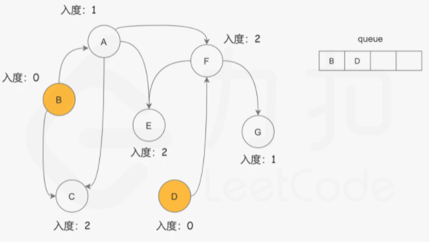
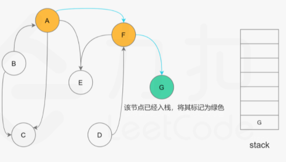

1. 介绍
在 c++ 编译的过程中，需要指定文件之间的依赖关系，而编译器通过源文件两两之间的局部依赖关系，确定一个全局的编译顺序。
大学中有些课程需要先修其他课程，学生需要在这个要求下，通过合理的选课修完所有课程。
以上两个例子都依赖一个图中的经典算法，拓扑排序。拓扑排序是有向图中对顶点的一种线性排序，使得对于从顶点 u 到顶点 v 的每个有向边，u 在排序结果中都在 v 之前。
拓扑排序有两种实现方法，Khan 算法和深度优先遍历 DFS 算法。
在此之前，先介绍本文会遇到的部分概念：
- 入度：有向边 u -> v 的个数称为顶点 v 的入度；
- 邻接表：图的一种实现方式，对于每个顶点，使用一个表存储与其连接的顶点。在有向图中，表中存储本节点指向的节点，例如有边 u -> v1, u -> v2，则 u 的邻接表为 {v1, v2}。下面为代码实现：
1
2
3
4
5
6
7
8
9
10
11
12
13
14
15
16
17
18
|
public List<List<Integer>> buildGraph(int n, int[][] edges) {
List<List<Integer>> graph = new ArrayList<>(n);
for (int i = 0; i < n; i++) {
graph.add(new ArrayList<>());
}
for (int[] edge : edges) {
int u = edge[0];
int v = edge[1];
graph.get(u).add(v);
}
return graph;
}
|
2. Khan算法
Khan 算法基于贪心的思想，主要过程为：
- 找到一个入度为 0 的节点 u，将该节点 u 加入结果集；
- 删除与 u 连接的所有边；
- 寻找下一个入度为 0 的节点，重复上述过程；
- 如果结果集的长度等于节点个数，则存在拓扑排序结果，反之则不存在。
为此引入一个队列存储入度为 0 的节点。

代码实现如下：
1
2
3
4
5
6
7
8
9
10
11
12
13
14
15
16
17
18
19
20
21
22
23
24
25
26
27
28
29
30
31
32
33
34
35
36
37
38
39
40
41
| public int[] khanTopoSrot(List<List<Integer>> graph) {
int n = graph.size();
int[] inDegrees = new int[n];
for (int i = 0; i < n; i++) {
List<Integer> edges = graph.get(i);
for (int v : edges) {
inDegrees[v]++;
}
}
Queue<Integer> queue = new LinkedList<>();
for (int i = 0; i < n; i++) {
if (inDegrees[i] == 0) {
queue.offer(i);
}
}
int[] res = new int[n];
int index = 0;
while (!queue.isEmpty()) {
int vertex = queue.poll();
res[index++] = vertex;
List<Integer> edges = graph.get(vertex);
for (int v: edges) {
inDegrees[v]--;
if (inDegrees[v] == 0) {
queue.offer(v);
}
}
}
if (index != n) {
return new int[0];
}
return res;
}
|
设图中顶点个数为 V，边的个数为 E，khan 算法对于每个边访问一次，每个节点访问一次，时间复杂度为 O(V + E)。
3. DFS
用一个栈来存储已经搜索完的节点，假设我们当前搜索节点 u，如果 u 的所有相邻节点都已经搜索完成，那么这些节点都已经在栈中了，此时可以把 u 入栈。从栈顶往栈底的顺序看，u 出现在所有 u 的相邻节点的前面，满足拓扑排序的要求。
这样，对图进行深度优先遍历，最终栈底到栈顶的序列即为拓扑排序的结果。其主要过程是：

为此引入数组 visited 来标记节点的状态。代码如下：
1
2
3
4
5
6
7
8
9
10
11
12
13
14
15
16
17
18
19
20
21
22
23
24
25
26
27
28
29
30
31
32
33
34
35
36
37
38
39
40
41
42
43
44
45
46
47
48
| private final int NOT_SEARCH = 0;
private final int SEARCHING = 1;
private final int SEARCHED = 2;
private int[] visited;
private boolean valid = true;
private Deque<Integer> stack;
private List<List<Integer>> graph;
public int[] dfsTopoSrot(List<List<Integer>> graph) {
this.graph = graph;
int n = graph.size();
this.visited = new int[n];
this.stack = new LinkedList<>();
for (int i = 0; i < n && valid; i++) {
if (visited[i] == NOT_SEARCH) {
dfs(i);
}
}
if (!valid) {
return new int[0];
}
int[] res = new int[n];
int index = 0;
while (!stack.isEmpty()) {
res[index++] = stack.pollFirst();
}
return res;
}
private void dfs(int u) {
visited[u] = SEARCHING;
for (int v : graph.get(u)) {
if (visited[v] == NOT_SEARCH) {
dfs(v);
} else if (visited[v] == SEARCHING) {
valid = false;
return;
}
}
visited[u] = SEARCHED;
stack.push(u);
}
|
DFS 算法对于每个顶点访问两次，每个边访问一次，时间复杂度也为 O(V + E)。
参考资料